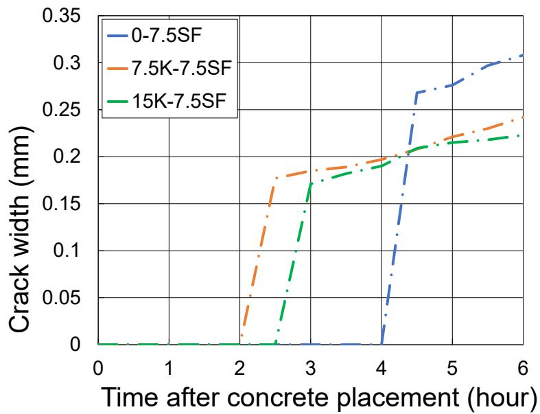
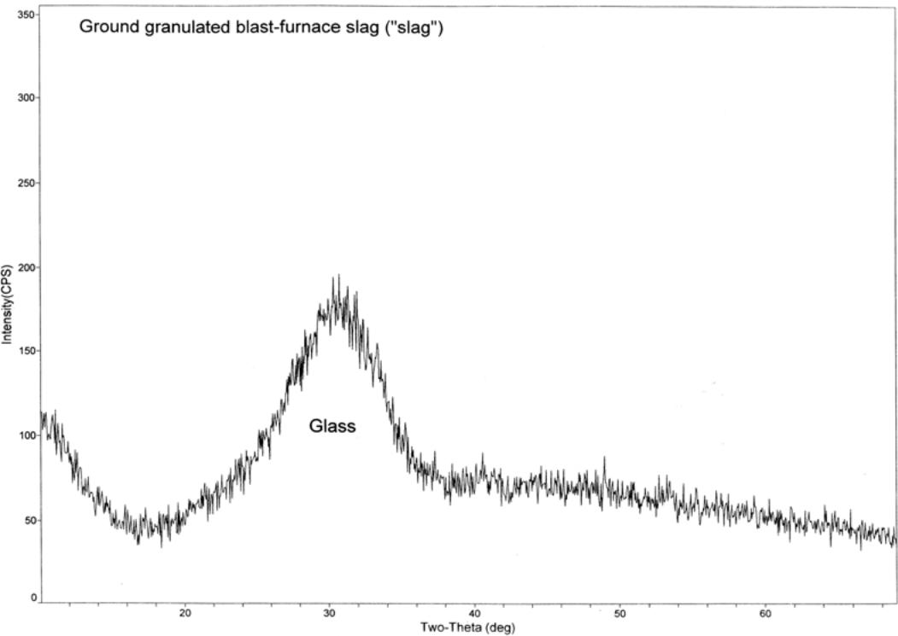
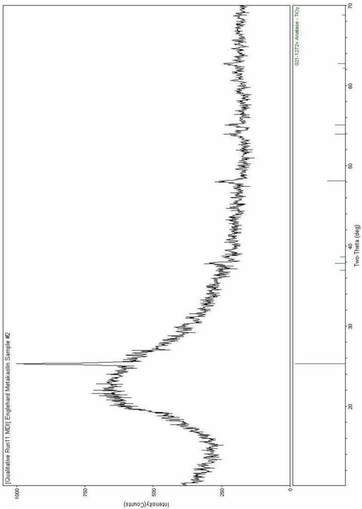
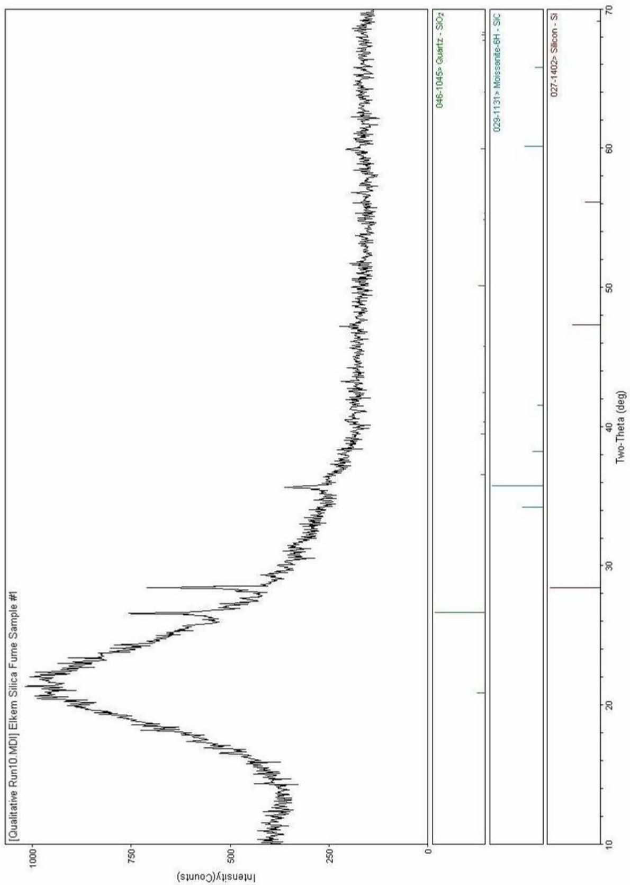
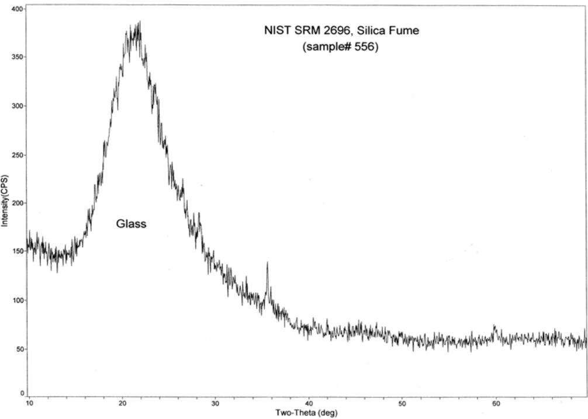
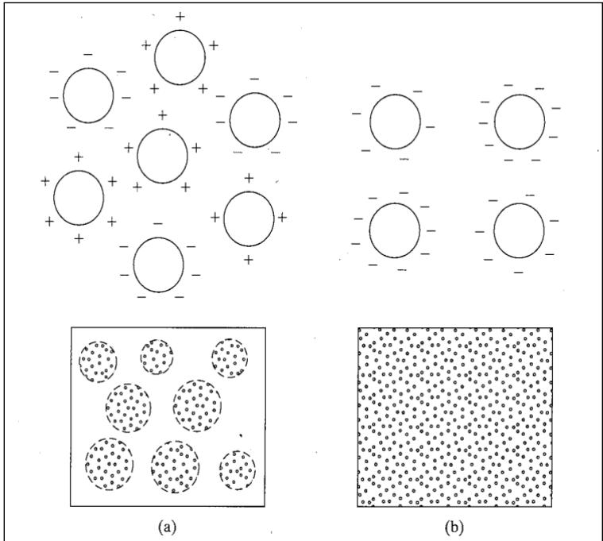
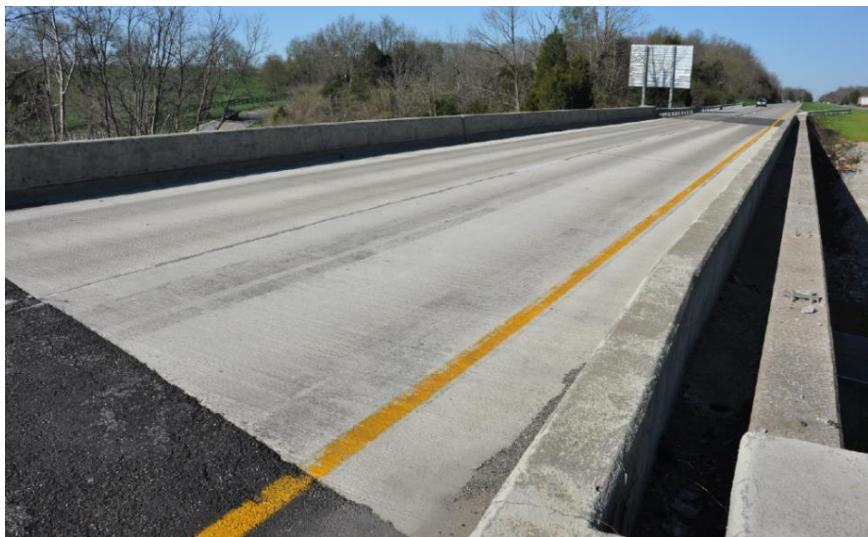

Alkali-Silica Reaction
A deleterious chemical reaction between alkalis in portland cement and reactive silica in aggregates, producing an expansive gel that causes cracking and deterioration in concrete. [1]
ASR is a chemical reaction between hydroxyl ions in the pore solution from hydrated cement and specific siliceous minerals such as opal, chert, microcrystalline quartz, and acidic volcanic glass. This process forms an alkali-silica gel that can imbibe water to expand and fracture both the affected aggregate particles and the surrounding paste. [2]
Sources (21)
Mechanisms of ASR and Microcracking
In some concrete distress cases, ASR-related cracking can manifest as fractures originating within the interior of coarse aggregate particles and extending into the surrounding cement paste [3]. This internal fracturing pattern, often accompanied by discoloration of the paste adjacent to affected aggregates, can be distinguished from other failure modes where distress is primarily located at the paste/aggregate interface, results from capillary pore system failures, or is caused solely by poor drainability or anti-icing brine infiltration [3]. In highly reactive systems, internal microcracking can extend up to 55 mm (2-3/16 inches) deep within fine aggregate particles and proceed through the cement paste, which is often partially filled with alkali-silica gel [4]. Furthermore, microcracking associated with alkali-silica reactive aggregates often manifests as fine, sub-vertical cracks that radiate from or surround the reactive particles, sometimes extending up to 14mm in depth near distressed joints; these microcracks can occur within the paste and surrounding limestone aggregates, indicating that ASR distress may be localized around specific aggregate types even if coarse aggregates remain sound [5]. In concrete containing highly reactive fine shale aggregates, clear to white alkali-silica gel products are frequently observed lining or filling voidspaces adjacent to these particles, often co-occurring with secondary ettringite deposits that fill smaller entrained air voids [5]. This gel formation is distinct from the distress caused by cyclic freeze-thaw action on saturated concrete, as the reactive shales themselves may not be the primary source of structural failure despite their reactivity [5].
 ASR filled cracks and rims [4]
ASR filled cracks and rims [4]
The expansive forces from ASR gel can interact synergistically with secondary ettringite formation and freeze-thaw cycles, where water ingress through initial cracking exacerbates damage in concrete with marginal air void systems [4]. Secondary ettringite deposition can compromise durability by lining and filling entrained air voids, effectively neutralizing the concrete’s resistance to freeze-thaw deterioration even when the initial air system was adequate [4]. Specifically, the presence of secondary ettringite can compromise durability by infilling finer-sized air void spaces, which pushes the spacing factor parameter out of acceptable limits for freeze-thaw resistance even when the original air void system was adequate; for instance, in one core sample, the spacing factor increased from 0.178mm to 0.330mm due to ettringite infilling near a distressed joint plane [5]. Additionally, secondary ettringite deposition can occur during the saturation of concrete paste by deicer solutions without requiring prior distress, fueled by sulfates available from surrounding soils or concrete materials, a process that fills entrained air voids and compromises freeze-thaw resistance independently of ASR gel expansion [5].
 #2 DESCRIPTION: Much of the finer air voidspaces in the concrete paste, proximate to the joint distress and at 55mm depth in the core, are filled with secondary ettringite 5x [5]
#2 DESCRIPTION: Much of the finer air voidspaces in the concrete paste, proximate to the joint distress and at 55mm depth in the core, are filled with secondary ettringite 5x [5]
Case Studies in Concrete Distress
In a 2006 forensic study of twelve concrete pavement projects, ASR was found to some degree in all twenty-three cores from pavements built 1984–1999 [4]. The offending material was a significant quantity of chert in the fine aggregate — highly reactive and predominant in Detroit-area sand, making alternative sand sources impractical [4]. Within this study, low-alkali cement alone (as in Core 10) was insufficient to overcome the degree of reactivity [4], and the use of 15–20% fly ash (Core 14) was also found to be insufficient to mitigate ASR from the reactive sand [4]. Conversely, Kansas Department of Transportation pavements are reported to be relatively free of ASR due to a 75-year history of aggregate research focused on durability [6].
In some forensic examinations of concrete pavements, highly alkali-silica reactive fine shale aggregates are observed scattered throughout core samples but are determined not to be the primary source of distress when the failure is attributed to cyclic freeze-thaw action on unsound coarse aggregate [5]; this distinction highlights that ASR presence does not always equate to ASR-induced structural deterioration [5]. In Iowa concrete overlay field reviews, map- or web-shaped cracking was identified as a primary indicator of material durability issues, specifically distinguishing between aggregate durability problems like D-cracking and chemical reactivity such as ASR [7]. Additionally, curling and warping stresses in concrete overlays can contribute to early-age distress by initiating corner cracks that extend into longitudinal cracks, particularly when joints are skewed [7].
Mitigation via Supplementary Cementitious Materials (SCMs)
Supplementary Cementitious Materials (Class F fly ash, slag, silica fume) can minimize or eliminate cracking related to ASR, and increasing supplementary cementitious materials content generally improves durability by enhancing impermeability, reducing thermal cracking risks, and mitigating alkali-aggregate expansion [8]. However, the use of pozzolanic supplementary cementitious materials can accelerate plastic shrinkage cracking by reducing the bleeding rate of freshly poured concrete, as the fine particles and water consumption inherent to the pozzolanic reaction decrease bleed water, leading to an accelerated development of negative capillary pressure that exceeds the tensile strength of early-age concrete [9]. Furthermore, the chemical composition of supplementary cementitious materials (SCMs) is inherently variable because they are byproducts not subject to direct process control, leading to significant differences in reactivity both within a single facility and across different production sites [10].

Onset and rate of plastic shrinkage cracking for Specimens 0-7.5SF, 7.5K-7.5SF, and 15K-7.5SF [9]Regarding specific performance, the 2011 FHWA concrete phase study found that Type IP cement (75% TI + 25% Class F) passed all three ASR evaluation methods (ASTM C1567, CSA A23.2-27A, Caltrans Section 90), whereas Class C fly ash combinations failed Caltrans requirements regardless of secondary SCM [11]. Consequently, key recommendations include testing sands to determine required SCM dosage and using blended cements and ternary mixes. In regions with alkali-reactive aggregates, specifications may mandate a fifty percent replacement rate using combined Grade 120 slag cement and Class F fly ash unless specific aggregate testing determines the required percentage [12].
Fly Ash and Slag Characteristics
Fly ash mitigates ASR through a combination of low soluble alkali content, slow alkali release rates, and reduced concrete permeability, despite potentially high total alkali levels (e.g., 3.53% for Holcim fly ash) [13]. For instance, the soluble alkali to total alkali ratio for Ottumwa fly ash ranges from 0.6 to 0.7, highlighting that a significant portion of its total alkali content is not immediately available to contribute to ASR [13]. While Class F fly ash, generally produced from burning bituminous and anthracite coals, often significantly enhances the concrete’s resistance to ASR, Class C (high-calcium) fly ash exhibits only limited ability to mitigate ASR compared to Class F fly ash [1]. Class C fly ash is typically derived from low sulfur, subbituminous, or lignite coals [14], and CSA specifications categorize fly ash into three types based on bulk calcium oxide content: Type F contains less than 8% CaO, Type CI ranges from 8% to 20%, and Type CH exceeds 20% [14]. Consequently, state regulations may restrict Class C fly ash usage entirely while permitting other pozzolans only if they demonstrate expansion less than 0.1 percent in ASTM C 1567 testing [12].
 Effect of admixture combination on the percent of air voids less than 300 μm for mixtures containing large amounts of Class C fly ash [14]
Effect of admixture combination on the percent of air voids less than 300 μm for mixtures containing large amounts of Class C fly ash [14]
Because low dosages of Class C fly ash blended with Class F fly ash are insufficient for mitigation, slag cement replacements at thirty-five percent or more effectively control the reaction [12], and higher slag replacement levels (40%+) are commonly used when ASR resistance is required. The ASTM specification for slag (C 989) categorizes it into three grades—80, 100, and 120—based on compressive strength in mortar cubes, with higher grades indicating more rapid strength gain [1]. Furthermore, increasing slag replacement levels linearly increases the datum temperature while exponentially increasing activation energy, demonstrating that ternary cement systems require more thermal energy to sustain hydration compared to binary mixes [13].

X-ray diffractogram of slag (note the sample is 100% glass) [1]Silica Fume, Metakaolin, and Ternary Blends
- Ternary mixtures combining two SCMs may provide better ASR mitigation than single SCMs
Metakaolin replacement of portland cement at levels between 10% and 15% is sufficient to control deleterious ASR expansion by entrapping alkalis within supplementary hydrates and lowering pore solution pH. [14]

XRD results for metakaolin [14]Silica fume consists almost entirely of sub-micron amorphous silica particles collected from bag houses exiting submerged-arc furnaces during silicon or ferrosilicon metal production. [14]

XRD results for silica fume [14]ASTM C1240 silica fume can effectively mitigate ASR in ternary blends at low cement replacement levels of 3 to 7%, though its use in binary mixtures is not recommended for exposed applications. [11]
Ternary blends can be specifically engineered to mitigate ASR expansion, with increased replacement levels of fly ash directly decreasing the resulting expansion. [12]
The addition of silica fume and metakaolin further enhances the mitigation of ASR when incorporated into ternary blended cements. [12]
Substituting silica fume for portland cement at levels exceeding the typical 5% to 10% range can lead to decreased compressive strength compared to concrete containing only portland cement. This performance drop necessitates careful dosage control when using silica fume in ternary blends designed to mitigate ASR. [9]
The CSA A23.2-27A and Caltrans Section 90 specifications assume SCMs act independently in ternary blends, but many mixtures failed these standards despite having acceptable expansions under ASTM C1567 testing. [11]
 Number of mixtures for a given expansion that passed Caltrans standard specification Section 90 requirements [11]
Number of mixtures for a given expansion that passed Caltrans standard specification Section 90 requirements [11]

X-ray diffactogram of silica fume (note the trace of SiC in the sample) [1]Alternative Mitigation: Lithium and Internal Curing
Lithium compounds are investigated as an alternative chemical admixture to mitigate ASR expansion, though practical application is currently hindered by significant cost barriers [4]. However, lithium-based treatments can be applied to existing concrete via saturation and pressure injection to stabilize the ASR distress mechanism without requiring replacement [6].
Alternatively, internal curing using water-filled inclusions, such as expanded lightweight aggregate (LWA), mitigates ASR damage through gel dilution, providing internal space to accommodate expansive gel formation, and altering the pore solution composition [15]. When internal curing is achieved using lightweight aggregate, prewetted lightweight fine aggregate (LWFA) is preferred over coarse LWA because it provides improved particle spacing at lower substitution rates, allowing fluid to be drawn more rapidly and uniformly throughout the paste [15]. Furthermore, internal curing with lightweight fine aggregate (LWFA) demonstrates superior freeze-thaw resistance compared to internal curing using coarse lightweight aggregate [15].
 Conventional curing compared to internal curing [15]
Conventional curing compared to internal curing [15]
Testing Standards and Aggregate Reactivity Evaluation
To evaluate aggregate reactivity, various testing protocols are employed, such as ASTM C 441 (mortar bar method) for Phase 1 screening and ASTM C 1293 (concrete prism test) for Phase 2 verification. Other methods include ASTM C 1567 — accelerated mortar bar test for evaluating SCM effectiveness against ASR, the CSA A23.2-27A — Canadian accelerated mortar bar method with pass/fail criterion, and Caltrans Section 90 — California specification using expansion ratio; minimum 3.0 required. Aggregates susceptible to alkali-silica reaction must be evaluated for potential susceptibility using AASHTO PP 65, and compliance with the mitigation strategies described in that specification is required if such aggregates are utilized [15]. Furthermore, AASHTO R 80 provides comprehensive recommendations for determining aggregate reactivity and selecting appropriate mitigation measures to prevent deleterious expansion in new concrete construction, a standard practice widely utilized by highway agencies across the United States to address ASR risks [2]. For specialized assessment, the Iowa Department of Transportation utilizes the Iowa Pore Index (IPI) test alongside X-ray diffraction and X-ray fluorescence to evaluate aggregate durability, combining chemistry, mineralogy, and petrophysical properties into a single durability value [16].
 Sequential pressures applied in the SAM and calculation of the SAM number [2]
Sequential pressures applied in the SAM and calculation of the SAM number [2]
Detection and monitoring techniques also play a critical role; for instance, Ground-penetrating radar (GPR) surveys using dual-channel systems with ground-coupled antennas operating at center frequencies of 900 and 1,500 MHz can detect moisture gradients developing near ASR-reactive aggregate zones, though FCC emission regulations for ultra-wide band transmitters restrict the maximum data collection speed to approximately 10 to 15 mph when collecting high-resolution data [17]. Laboratory experiments using fused quartz aggregate (passing a #4 but retained on a #8 sieve) have demonstrated that ASR-induced cracking can occur within concrete specimens without manifesting as surface distress, as cores extracted from the slabs revealed internal cracking in the reactive aggregate particles even when no surface cracks were visible [17]. Ultimately, laboratory screening tests for aggregate reactivity and long-term concrete prism data can be compiled into national databases to support expert systems that predict durability problems during mixture proportioning [10].
Recycled Concrete Aggregate (RCA) Considerations
Concrete containing recycled concrete aggregate (RCA) exhibits a lower modulus of elasticity, higher coefficient of thermal expansion, and experiences more drying shrinkage compared to concrete with virgin aggregates [18]. Furthermore, replacing a wide range of virgin aggregate fractions with recycled concrete can cause a 20 to 30 percent decrease in strength, while using RCA fines causes an even greater reduction in modulus [18]. The transition zone between the old mortar and original virgin aggregate in recycled concrete is more permeable than virgin aggregate, which increases the potential for carbonation and chloride penetration [18].
Concrete made with RCA from material previously exhibiting alkali-silica reaction has the potential to continue showing signs of ASR, though engineered mixture designs can overcome these durability issues [18]. Specifically, the use of Class F fly ash has been shown to mitigate the potential for ASR when recycled concrete aggregate is sourced from concrete known to exhibit alkali-silica reactivity [18].
Aggregate Properties and General Durability Enhancements
Concrete permeability limits the ingress of ions and water, thereby restricting the chemical reactions associated with alkali-silica reaction attack [6]. In this context, properly entrained air voids with specific size and spacing characteristics can positively affect expansion associated with alkali-silica reaction by providing internal relief for expansive gel pressures [19]. Durability can be further enhanced by increasing the maximum size of aggregate, which reduces the volume of cement paste, typically the component most vulnerable to physical or chemical attack [8]. Additionally, the use of water-reducing agents lowers the water-to-cement ratio, decreasing concrete porosity and improving resistance to de-icing salts and acidic waters [8].

Dispersing action of water-reducing agents a) flocculated paste and b) dispersed paste [8]Regarding structural movement, differential drying shrinkage caused by moisture gradients can lead to upward warping of concrete slabs because the top surface is often drier than the bottom [2]. This volume change produces increased stress and roughness, particularly in arid climatic zones [2].
Latex-Modified Concrete (LMC) Applications
In latex-modified concrete (LMC), the hydration mechanism involves a polymer-cement co-matrix phase where cement hydration products and polymer films interpenetrate to form a monolithic network that coats aggregate particles; furthermore, reactive polymers such as poly(vinylidene chloride-vinyl chloride) can chemically bond with calcium ions, calcium hydroxide crystals, and silicate surfaces of aggregates [20]. Map cracking in LMC overlays is primarily attributed to early-age shrinkage rather than alkali-silica reaction or freeze-thaw cycles, typically propagating within 15 days after placement, though debonding failure between the overlay and substrate can also manifest as map cracking when driven by differential expansion stresses and smooth surface textures from milling [20].
To prevent debonding failure caused by stresses from differential expansion and contraction between the overlay and original substrate, LMC bridge deck overlays are restricted to a maximum thickness of 3 inches, and hydro-blasting following milling is required to create an irregular surface texture that ensures better bonding [20]. Despite potential durability benefits, the application costs for LMC bridge deck overlays are 25% to 53% higher than conventional concrete overlays, which limits their widespread usage [20].

Worker tining LMC overlay to provide surface texture. Note the wet burlap used to cover the overlay during curing. (e) Finished bridge deck [20]Related
ASR is one of the materials-related deterioration issues that can prompt the use of rubblization to break existing PCC slabs into pieces ranging from 2 to 6 inches before overlaying with HMA. [21]
Rubblization breaks PCC slabs into pieces usually ranging from 2 to 6 inches, creating a structure that behaves like a high-strength granular base with strength between 1.5 to 3 times greater than a high-quality, dense-graded, crushed-stone base in load-distributing characteristics. [21]
References
- S. Schlorholtz, "Development of Performance Properties of Ternary Mixes: Scoping Study (Phase 1)," Center for Portland Cement Concrete Pavement Technology, Iowa State University, Ames, IA, Rep. DTFH61-01-X-00042 (Project 13), 2004. [Online]. Available: https://www.cptechcenter.org/wp-content/uploads/2018/03/ternary_mixes.pdf
- J. Gross, J. Weiss, T. Ley, P. Taylor, N. Weitzel, T. Van Dam, G. Smith, and C. Jones, "Performance-Engineered Concrete Paving Mixtures," National Concrete Pavement Technology Center, Iowa State University, Ames, IA, Rep. TPF-5(368), 2022. [Online]. Available: https://www.intrans.iastate.edu/wp-content/uploads/2023/04/performance-engineered_concrete_paving_mixtures_w_cvr.pdf
- S. Schlorholtz, B. Dawson, and M. Scott, "Development of In Situ Detection Methods for Materials-Related Distress (MRD) in Concrete Pavements: Phase 1," Center for Portland Cement Concrete Pavement Technology, Iowa State University, Ames, IA, Rep. CTRE 00-96, 2003. [Online]. Available: https://www.intrans.iastate.edu/wp-content/uploads/2018/03/mrd.pdf
- J. Grove, F. Bektas, and H. Gieselman, "Southeast Michigan Local Road Concrete Pavement Durability Study," National Concrete Pavement Technology Center, Ames, IA, 2006. [Online]. Available: https://www.cptechcenter.org/wp-content/uploads/2018/03/mi_pavement_durability.pdf
- P. Taylor, L. Sutter, and J. Weiss, "Investigation of Deterioration of Joints in Concrete Pavements," National Concrete Pavement Technology Center, Ames, IA, Rep. TPF-5(224), 2012. [Online]. Available: https://www.intrans.iastate.edu/wp-content/uploads/2018/03/joint_deterioration_penetrating_sealers_field_study_w_cvr.pdf
- J. Grove, G. Fick, T. Rupnow, and F. Bektas, "Material and Construction Optimization for Prevention of Premature Pavement Distress in PCC Pavements," National Concrete Pavement Technology Center, Ames, IA, Rep. TPF-5(066), 2008. [Online]. Available: https://www.intrans.iastate.edu/wp-content/uploads/2018/03/mco-final.pdf
- J. Gross, D. King, D. Harrington, H. Ceylan, Y. A. Chen, S. Kim, P. Taylor, and O. Kaya, "Concrete Overlay Performance on Iowa's Roadways (Field Data Report)," National Concrete Pavement Technology Center, Ames, IA, Rep. TR-698, 2017. [Online]. Available: https://www.intrans.iastate.edu/wp-content/uploads/2017/09/Iowa_concrete_overlay_performance_w_cvr.pdf
- P. Taylor, F. Bektas, E. Yurdakul, and H. Ceylan, "Optimizing Cementitious Content in Concrete Mixtures for Required Performance," National Concrete Pavement Technology Center, Ames, IA, 2012. [Online]. Available: https://www.intrans.iastate.edu/wp-content/uploads/2018/03/taylor_ocm_w_cvr2.pdf
- B. Shafei, P. Taylor, B. Phares, and M. Kazemian, "Fiber-Reinforced Concrete for Bridge Decks," Bridge Engineering Center, Iowa State University, Ames, IA, Rep. TR-767, 2021. [Online]. Available: https://www.intrans.iastate.edu/wp-content/uploads/2021/12/fiber-reinforced_concrete_in_bridge_decks_w_cvr.pdf
- D. Harrington, R. Rasmussen, D. Merritt, T. Cackler, and P. Taylor, "Long-Term Plan for Concrete Pavement Research and Technology—The Concrete Pavement Road Map (Second Generation): Volume II, Tracks (FHWA-HRT-11-070)," National Center for Concrete Pavement Technology, Iowa State University, Ames, IA, 2012. [Online]. Available: https://www.fhwa.dot.gov/publications/research/infrastructure/pavements/pccp/11070/11070.pdf
- P. Tikalsky, P. Taylor, S. Hanson, and P. Ghosh, "Development of Performance Properties of Ternary Mixtures: Laboratory Study on Concrete," National Concrete Pavement Technology Center, Ames, IA, Rep. TPF-5(117), 2011. [Online]. Available: https://www.intrans.iastate.edu/research/completed/development-of-performance-properties-of-ternary-mixtures-laboratory-study-on-concrete/
- P. Taylor, P. Tikalsky, K. Wang, G. Fick, and X. Wang, "Development of Performance Properties of Ternary Mixtures: Field Demonstrations and Project Summary," National Concrete Pavement Technology Center, Ames, IA, Rep. TPF-5(117), 2012. [Online]. Available: https://www.intrans.iastate.edu/wp-content/uploads/2018/03/ternary_final_w_cvr.pdf
- K. Wang and Z. Ge, "Evaluating Properties of Blended Cements for Concrete Pavements," Department of Civil, Construction and Environmental Engineering, Iowa State University, Ames, IA, 2003. [Online]. Available: https://www.intrans.iastate.edu/wp-content/uploads/2018/03/blended_cements-1.pdf
- P. Tikalsky, V. Schaefer, K. Wang, B. Scheetz, T. Rupnow, A. St. Clair, M. Siddiqi, and S. Marquez, "Development of Performance Properties of Ternary Mixes, Phase 1," Center for Transportation Research and Education, Ames, IA, Rep. TPF-5(117), 2007. [Online]. Available: https://www.intrans.iastate.edu/research/completed/development-of-performance-properties-of-ternary-mixes-phase-1/
- W. J. Weiss and L. Montanari, "Guide Specification for Internally Curing Concrete," National Concrete Pavement Technology Center, Ames, IA, Rep. TPF-5(286), 2017. [Online]. Available: https://www.intrans.iastate.edu/wp-content/uploads/2018/09/IC_guide_spec_w_cvr.pdf
- J. F. Orso, IV and F. Hasiuk, "Calibrating the Iowa Pore Index with Mercury Intrusion Porosimetry and Petrography — Phase II," Geological and Atmospheric Sciences, Ames, IA, Rep. InTrans Project 15-553, 2019. [Online]. Available: https://www.cptechcenter.org/wp-content/uploads/2019/10/calibrating_Iowa_pore_index_phase_II_w_cvr.pdf
- S. Schlorholtz, "Development of In Situ Detection Methods for Materials-Related Distress (MRD) in Concrete Pavements: Phase II," Center for Portland Cement Concrete Pavement Technology, Iowa State University, Ames, IA, Rep. HR-1081, 2005. [Online]. Available: https://www.intrans.iastate.edu/wp-content/uploads/2018/03/mrd_phase2.pdf
- S. Garber, R. Rasmussen, T. Cackler, P. Taylor, D. Harrington, G. Fick, M. Snyder, T. Van Dam, and C. Lobo, "A Technology Deployment Plan for the Use of Recycled Concrete Aggregates in Concrete Paving Mixtures," National Concrete Pavement Technology Center, Ames, IA, 2011. [Online]. Available: https://www.intrans.iastate.edu/wp-content/uploads/2018/03/RCA-Draft-Report_final-ssc.pdf
- K. Wang, M. Mohamed-Metwally, F. Bektas, and J. Grove, "Improving Variability and Precision of Air-Void Analyzer (AVA) Test Results ..., Phase I," Center for Transportation Research and Education, Ames, IA, 2008. [Online]. Available: https://www.cptechcenter.org/wp-content/uploads/2018/03/ava-1.pdf
- K. Wang, B. M. Shankaramurthy, A. Anand, Y. Sargam, K. Freeseman, and B. Phares, "Performance Evaluation of Very Early Strength Latex-Modified Concrete (LMC-VE) Overlay," Institute for Transportation, Iowa State University, Ames, IA, Rep. TR-771, 2024. [Online]. Available: https://bec.iastate.edu/wp-content/uploads/2024/10/performance_evaluation_of_LMC-VE_overlay_w_cvr.pdf
- H. Ceylan, K. Gopalakrishnan, and S. Kim, "Rehabilitation of Concrete Pavements Utilizing Rubblization and Crack and Seat Methods (Phase II): Performance Evaluation of Rubblized Pavements in Iowa," CTRE, Iowa State University, Ames, IA, Rep. TR-550, 2008. [Online]. Available: https://www.intrans.iastate.edu/wp-content/uploads/2018/10/rubblization_pavements.pdf
Feedback on this page